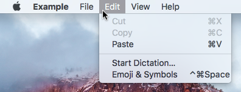

MenuBar QML Type
A native menubar. More...
| Import Statement: | import Qt.labs.platform |
| Inherits: |
Properties
Methods
- void addMenu(Menu menu)
- void clear()
- void insertMenu(int index, Menu menu)
- void removeMenu(Menu menu)
Detailed Description
The MenuBar type provides a QML API for native platform menubars.

A menubar consists of a list of drop-down menus.
MenuBar { id: menuBar Menu { id: fileMenu title: qsTr("File") // ... } Menu { id: editMenu title: qsTr("&Edit") // ... } Menu { id: viewMenu title: qsTr("&View") // ... } Menu { id: helpMenu title: qsTr("&Help") // ... } }
MenuBar is currently available on the following platforms:
- macOS
- Android
- Linux (only available on desktop environments that provide a global D-Bus menu bar)
- Windows
Note: Types in Qt.labs modules are not guaranteed to remain compatible in future versions.
See also Menu.
Property Documentation
window : Window |
Method Documentation
void addMenu(Menu menu) |
Adds a menu to end of the menubar.
void clear() |
Removes all menus from the menubar.
void removeMenu(Menu menu) |
Removes a menu from the menubar.